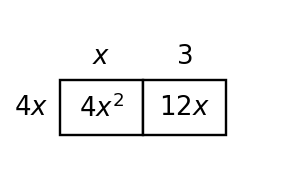
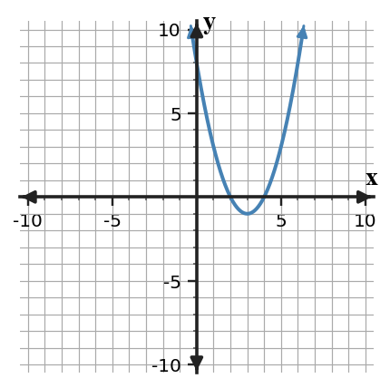
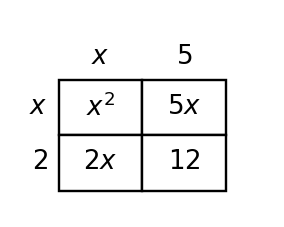

Unit 5 Progress Tracker
Students will analyze polynomial structure, represent quadratic expressions in useful forms, solve for zeros, and interpret how factors connect to graphs and key features.
I need more instruction and practice.
I understand most of it but need more practice.
I can do this independently.
I can teach it.
Progress Tracking
Progress Tracking
Evidence
Progress Tracking
Evidence
Progress Tracking
Evidence
Progress Tracking
Evidence
Learning Ladder
| Rung | I Can Statement | DOK | Level |
|---|---|---|---|
| 8 | I can design a short model that uses an appropriate quadratic form to answer a contextual question about zeros, vertex, or intercepts. | DOK 4 | Above |
| 7 | I can construct equivalent quadratic expressions in more than one form and select the form that best reveals the needed feature. | DOK 4 | Above |
| 6 | I can critique a form choice by connecting the algebraic structure to the graph feature or context it reveals. | DOK 3 | Essential |
| 5 | I can assess whether a factoring strategy is reasonable by checking structure, products, sums, and equivalent forms. | DOK 3 | Essential |
| 4 | I can apply factoring patterns to rewrite quadratic expressions and connect factors to zeros. | DOK 2 | Essential |
| 3 | I can construct factored forms from products, sums, common factors, or visible graph intercepts. | DOK 2 | Essential |
| 2 | I can use vocabulary and notation for factors, zeros, intercepts, standard form, vertex form, and factored form. | DOK 1 | Essential |
| 1 | I can apply basic factoring steps to expressions with a greatest common factor or simple trinomial structure. | DOK 1 | Essential |
Student Goal Setting
Unit 5 Practice by Depth of Knowledge
Format: 3-5 minute warm-up, vocabulary check, representation recognition, or exit ticket
Purpose: DOK 1 reveals whether students can use basic factoring language, notation, and first-step structure before they work with longer polynomial or graph-based tasks.
Assessment Ideas
- GCF and Remaining Factors Can Be Assessed After Section 5.1 - Classify numeric and variable common-factor structure; complete coefficient-and-power tables; find missing outside factors in polynomial products.
- Product-Sum and Binomial Factors Can Be Assessed After Section 5.2 - Use product-sum clues to choose integer pairs; write binomial factor pairs; connect area models to expanded trinomials.
- Special Factoring Pattern Recognition Can Be Assessed After Section 5.3 - Determine whether expressions fit difference-of-squares or perfect-square-trinomial patterns; complete square-pattern equations; write conjugate factor pairs.
- Quadratic Features from Forms Can Be Assessed After Section 5.5 - Interpret zeros, vertices, maximum/minimum behavior, and readable features from standard, factored, and vertex form.
DOK 1 evidence shows whether students can recognize common-factor, product-sum, and special-pattern cues before factoring, and whether they can read basic quadratic features from factored, vertex, and standard forms.
Factor out the greatest common factor: $\,15x^2-25x$.
For $x^2+9x+20$, identify the two integers that multiply to $\,20$ and add to $\,9$.
Classify $x^2-81$ as a difference of squares, a perfect-square trinomial, or neither. Explain the feature you noticed.
For $f(x)=(x-7)(x+2)$, list the zeros and write the $x$-intercepts as ordered pairs.
Name the form of each quadratic expression: $y=x^2-4x-12$, $y=(x-6)(x+2)$, and $y=(x-2)^2-16$.
Which expression is in factored form?
- $x^2+8x+12$
- $(x+2)(x+6)$
- $x^2-4$
- $\,2x^2+5x-3$
Use the area model to write the total area as a sum and as a product.

Complete the feature table for the quadratic forms.
| Form | Feature easiest to read |
|---|---|
| factored form | _____ |
| vertex form | _____ |
| standard form | _____ |
Format: Mini-quiz, graph/table task, matching task, partner check, or short written task
Purpose: DOK 2 reveals whether students can carry out factoring strategies, connect equivalent forms, and use factored form to read zeros and intercepts.
Assessment Ideas
- GCF Models and Contexts Can Be Assessed After Section 5.1 - Represent GCF structure with area models and contexts; write equivalent products and sums; factor monomial common factors from tables.
- Trinomial Factoring with Evidence Can Be Assessed After Section 5.2 - Apply product-sum or grouping strategies to factor trinomials; complete factoring tables; verify middle terms with multiplication or area-model evidence.
- Special Pattern Factoring Can Be Assessed After Section 5.3 - Use special factoring patterns to rewrite differences of squares and perfect-square trinomials; complete square-pattern tables; explain cancellation in conjugate products.
- Zeros and Equivalent Quadratic Forms Can Be Assessed After Section 5.5 - Convert among graphs, factored form, and vertex form; estimate zeros in context; identify zeros, vertices, and intercepts across equivalent forms.
DOK 2 evidence shows whether students can carry out GCF, trinomial, and special-pattern factoring in models, tables, contexts, and equations while connecting zeros and equivalent forms to graphs.
Factor completely: $\,18x^3-12x^2+30x$. Show the common factor and the remaining expression.
Complete the diamond problem, then use it to factor $x^2+2x-24$.

Factor $\,2x^2+11x+15$ by organizing the product and sum relationship. Then check by multiplying your factors.
Use a special pattern to factor $\,9x^2-64$. Name the pattern and write the factors.
Rewrite $x^2-12x+36$ in squared-binomial form and explain how the middle term confirms the pattern.
Use factored form to write a quadratic with zeros $-4$ and $\,3$. Then find its $y$-intercept by substituting $x=0$.
Use the blank coordinate plane to sketch a quadratic with zeros at $-1$ and $\,5$ that opens upward. Label the zeros and axis of symmetry.

The same quadratic is written in three forms below. Complete the table by naming the feature each form makes easiest to read.
| Form | Expression | Feature revealed |
|---|---|---|
| standard | $x^2-6x+8$ | _____ |
| factored | $(x-2)(x-4)$ | _____ |
| vertex | $(x-3)^2-1$ | _____ |
Format: Constructed response, model critique, strategy comparison, representation analysis, or discourse prompt
Purpose: DOK 3 reveals whether students can reason about why a factoring strategy or quadratic form is useful, efficient, and mathematically valid.
Assessment Ideas
- GCF Error and Structure Analysis Can Be Assessed After Section 5.1 - Analyze incomplete GCF factorizations and mismatched models; revise expressions or cells; justify why a final product is completely factored.
- Trinomial Strategy Analysis Can Be Assessed After Section 5.2 - Develop factoring strategies for non-monic trinomials; compare product-sum evidence with binomial products; choose values that make a trinomial factorable.
- Special Pattern Reasoning Can Be Assessed After Section 5.3 - Validate special-pattern reasoning across conjugate products and square models; revise mismatches; test strategies for recognizing perfect-square trinomials.
- Quadratic Representation Analysis Can Be Assessed After Section 5.5 - Critique zero-finding errors and graph choices; use intercept evidence to select matching graphs; choose efficient quadratic forms for features.
DOK 3 evidence shows whether students can diagnose incomplete or mismatched algebraic work, justify factoring strategies, and choose the quadratic representation that best supports a feature claim.
A student factors $\,12x^2+30x$ as $\,3x(4x+10)$. Critique the strategy: is it correct, complete, or both? Support your answer by checking structure and multiplication.
A student claims $x^2+10x+21=(x+5)(x+5)$ because the middle term is $\,10x$. Analyze the error using product and sum reasoning, then give a corrected factorization.
Compare the strategies for factoring $\,4x^2-25$ and $\,4x^2+20x+25$. Explain why one uses a difference-of-squares pattern and the other uses a perfect-square trinomial pattern.
The graph and factored equation are supposed to match: $g(x)=-(x+2)(x-4)$.

Critique the match by checking zeros, opening direction, and one other feature.
A table shows part of a quadratic model.
| $x$ | -2 | 0 | 2 | 4 |
|---|---|---|---|---|
| $y$ | 0 | -8 | -12 | -8 |
Use symmetry and zeros to defend a possible factored form, or explain what information is still missing.
For $h(x)=x^2-8x+15$, decide whether standard form or factored form is more useful for finding the zeros. Justify your choice and describe what a different form would reveal more directly.
A student says the vertex of $y=(x-6)(x+2)$ is easy to read because the equation is factored. Critique the claim and explain how the zeros can still help locate the vertex.
The area model is intended to represent $x^2+7x+10$. Analyze whether the dimensions and cells support the expression. Revise one part if needed and justify the revision.

Format: Brief performance task, modeling task, critique-and-revise task, design task, or capstone synthesis task
Purpose: DOK 4 reveals whether students can synthesize factoring, forms, zeros, and graph features in short modeling or critique tasks.
Assessment Ideas
- GCF Model Revision and Design Can Be Assessed After Section 5.1 - Adapt area models, expressions, and contexts so common-factor structure matches; create constrained polynomials; justify repeated-binomial products.
- Trinomial Design and Synthesis Can Be Assessed After Section 5.2 - Design diamond problems and trinomial examples with given constraints; extend leading-coefficient-1 methods; synthesize table, area-model, and factored representations.
- Special Pattern Design and Revision Can Be Assessed After Section 5.3 - Create paired perfect-square and difference-of-squares expressions; recommend efficient factoring pathways; revise square-pattern claims with evidence.
- Quadratic Model Synthesis Can Be Assessed After Section 5.5 - Model quadratic relationships with factored equations, tables, graphs, and contexts; translate zeros and vertex constraints into equivalent forms; revise models to meet contextual meaning.
DOK 4 evidence shows whether students can design or revise expressions, models, contexts, and multiple representations so factoring structure, zeros, vertex information, and contextual meaning all agree.
Design a short model for a thrown object whose height is zero at $t=1$ and $t=7$ seconds. Choose an appropriate quadratic form, define the variables, write an equation with a reasonable vertical scale, and explain what the zeros mean in context.
Create two equivalent forms of a quadratic that has zeros $-3$ and $\,5$. Then decide which form best answers each question: What are the zeros? What is the axis of symmetry? What is the $y$-intercept? Justify your choices.
A garden area model is supposed to have total area $x^2+11x+30$. Create two different rectangle-dimension pairs that could represent it, then explain what stays the same and what changes between the models.
A student modeled profit with $P(x)=(x-2)(x-10)$ and said the company makes a maximum profit halfway between the zeros. Critique and revise the model or interpretation so it answers a maximum-profit question appropriately.
Create a quadratic function that has vertex $(4,-9)$ and zeros that are exactly 6 units apart. Write it in vertex form and factored form, then explain how the two forms show the same graph.
Design a factoring decision guide for a classmate. Include at least four branches: GCF first, difference of squares, perfect-square trinomial, and general trinomial. For each branch, include one expression and explain the evidence.
A context asks when a projectile reaches the ground and what its highest point is. Compare factored form and vertex form for answering these two questions, then recommend a solution pathway that uses both forms efficiently.
Revise the flawed statement: “Because $x^2-16=(x-8)(x+8)$, the zeros are $\,8$ and $-8$.” Explain the structural error, correct the factorization, and describe how the correction changes the graph features.